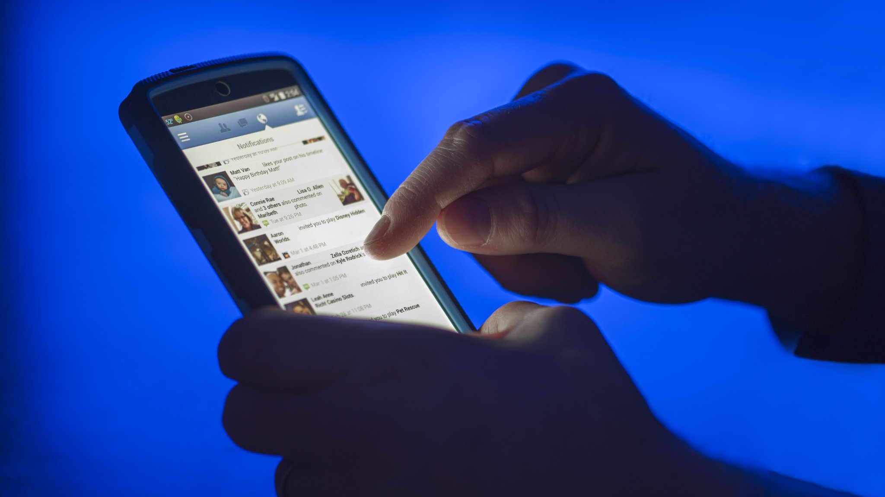

En España, los usuarios (de entre 16 y 64 años) pasan de media 5h 41 minutos navegando por Internet, 1h 51m utilizando las redes sociales, 3h 11 minutos viendo la televisión, 1h escuchando música en streaming y 54 minutos jugando a la consola. Los españoles tienen de media 16 apps instaladas.
Las apps preferidas en 2020 fueron (Número de descarga en España de Google Play y App Store): TikTok (8.4M), Whatsapp Messenger (6.6), ZOOM Cloud Meetings (6.4M), QR & Barcode Reader (6.4M), Google Meet (5.3M), Instagram (4.6M), Amazon Prime Video (4.5M), Amazon Shopping (3.4M), Google Keep (3.3M), Fast Scan (3.2M).
El 53% de los usuarios de smartphones abandona una web si no carga en menos de 3 segundos. España es el país con más smartphones por habitante en el mundo (El 92% de los españoles dispone de al menos un móvil inteligente).
El dispositivo principal de acceso a Internet es el teléfono móvil (49%), seguido del ordenador portátil y de sobremesa (47%), tablet (3,3%) y otros dispositivos (0,08%).
La palabra más cara de España es "Mysql Import" con un coste de 82,57$ por clic. Los sectores que representan la mayor inversión en anuncios de pago en España son el Software (26,7%) y el ocio (26,7%).
El 33% de los departamentos de Marketing digital usa la publicidad de pago para aumentar su reconocimiento de marca.
4 de las 15 palabras clave más caras de España son sobre servicios de cerrajería. Se envían más de 100 mil millones de correos diariamente.
El 57% de los usuarios no recomendaría a nadie una empresa con una página web mal adaptada para dispositivos móviles.
1 de cada 3 usuarios afirma que las marcas que tienen perfil en redes sociales les genera mayor confianza. El Prime Time de conexión a redes sociales es de 20:30h a 00:30h.
El 59% de los usuarios suele buscar información en redes sociales antes de realizar una compra por Internet.
La bailarina estadounidense Charli d'Amelio es el usuario más seguido de TikTok con más de 103.3 millones de seguidores, seguida de la también bailarina Addison Rae con aproximadamente 72.2M de seguidores.